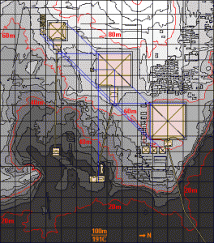

August 8, 2012
Pyramid Schemes

The day after we arrived in Cairo we visited the Egyptian Museum. When Frank and I visited Israel we discussed how national museums are often used to assert a national ideology by anchoring it within a particular historical narrative.¬† Striking insight, especially since Mubarak had recently commissioned his son to begin construction of a new national museum that was in progress when we visited (mid-revolution). The current national museum dates back to British colonial times, and feels like a warehouse. It is filled with countless riches, but it’s really almost impossible to navigate without a guide. I thought it was notable that the museum makes no mention of the Bible or the Exodus, even if it is to point out that there is no historical record of the events described (except for one possible mention of the Israelites, but even that is downplayed).
We had a wonderful tour guide taking us through the museum, and as we travelled through history I couldn’t shake the feeling that we were missing something important in our interpretation of these artifacts. The patron saint of my PhD program, James Carey, draws an important analytic distinction between communication as ritual, and communication as transmission. While there is no sharp line between these two modalities of communication, it is often helpful to distinguish between the two. So, for example, many of us read the paper ever day as a ritual, more like taking a bath than receiving information.
When we reached Tutankhamun’s treasures it hit me like a ton of limestone bricks. Through their burial rituals, the Egyptians were trying to transmit information, but we were largely interpreting their rites and artifacts as ritual. Having read works like Serpent in the Sky, I have an inkling as to how structures like the Temple of Luxor (and Solomon’s temple, for that matter) were attempts to represent their society’s entire cosmology. What if the Egyptian burial rituals were an attempt to transmit the state of the art of Egyptian knowledge? All of it‚Äîastronomy, mathematics, medicine, and philosophy/religion/metaphysics?
The first obvious question is the identity of the senders and receivers. If we take their myths at face value, the soul of the king would soon return to the his mummy.  Perhaps he might need a refresher course in Egyptian cosmology after the journey?  Cliff notes, at least? Or, perhaps these burial chambers were intended as time capsules. Messages intended for future generations? Future civilizations? Or, maybe just future generations of Egyptians (their civilization lasted thousands of years). Perhaps these attempts to capture the totality of Egyptian knowledge were like pissing contests between the priests.  How succinctly and elegantly could they represent Egyptian knowledge?
This was my frame of mind during my stay in Cairo and the questions I was mulling over as we visited the pyramids of Giza later that week.
Co(s)mic Interlude
Did you ever hear the one about the pyramids as time machines? It goes something like this:
The pyramids are constructed out of tons of limestone bricks. The molecule that makes up Limestone has two energy states. It’s lower energy state is its equilibrium. However, the molecule can also be excited into its higher energy state. Supposedly, this state could be induced by an acoustic wave at the correct resonant frequency. In the pyramids, this was achieved by a chorus of priests chanting at the appropriate frequencies.
During initiation rites, an initiate stood in the burial chamber of the pyramid while the priests chanted. This excited the limestone molecules. At a precise moment, the priests all stopped chanting, allowing the limestone molecules to collapse back into their lower energy state. This produced a wave of energy, all focused on the burial chamber. The initiate fell into a trance, whereupon they dreamed they travelled to the future.  They remained in this trance indefinitely… that is, until they heard this story!
Ha. Get it?
Space-Time Bouys
The pyramids are massive. Beyond human scale. They made me wonder…
For a while I’ve believed that time travel really must have really picked up on this planet around the invention of photography. For a fairly mundane reason. Your calibrations need to be flippin’ pinpoint. Time traveling can be though of as tele-transporting, through space-time. So, you need to be able to safely and reliably target your destination coordinates.The last thing you want to do when teleporting is materialize in the middle of a rock or a tree or worse. Photographs, when combined with the exact date and time of their exposure, provide such coordinates to future chrono-naughts looking for a safe journey.
In the presence of the pyramids it dawned on me that there is another solution to this safety equation: Hold your spatial coordinates fixed!¬† This would work best if you could build a structure that would be around for thousands of years, so you could be sure your point of arrival/departure would be around on both ends of your trip. The pyramid’s burial chambers pretty much fit this bill (modulo the irregularities of the earth’s orbit, the motion of our galaxy, etc. Quantum entanglement to the rescue?).
Could the pyramids satisfy these constraints? Maybe. This hypothesis could go a long way towards explaining the “curse of the mummies“. Could King Tut’s burial chamber be one of the last operational teleportation chambers? 3D printers designed to reconstruct information beamed from somewhen else (after all, the necessary atoms are sure to be in place for the reconstruction)?¬† Or, would the Egyptian pyramids merely decorative cribs of the original Atlantean devices, and were never fully operational?
All this suggests that Moses was a sleeper agent who infiltrated the Egyptian priesthood to liberate their most well-guarded secrets. Of course, the evidence of his handiwork is mapped out clearly in the blueprints of the tabernacle.
In Dec 2012 our sun will align with the black hole at the center of the milky way (or, will it?). A pretty good spatial-temporal landmark, if I were navigating. Whenever.
 Filed by Jonah at 9:24 pm under air,earth,metaphysics
Filed by Jonah at 9:24 pm under air,earth,metaphysics
No Comments

 1 Comment
1 Comment
 In a
In a


{kind=link}